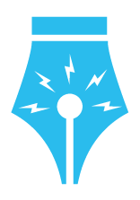
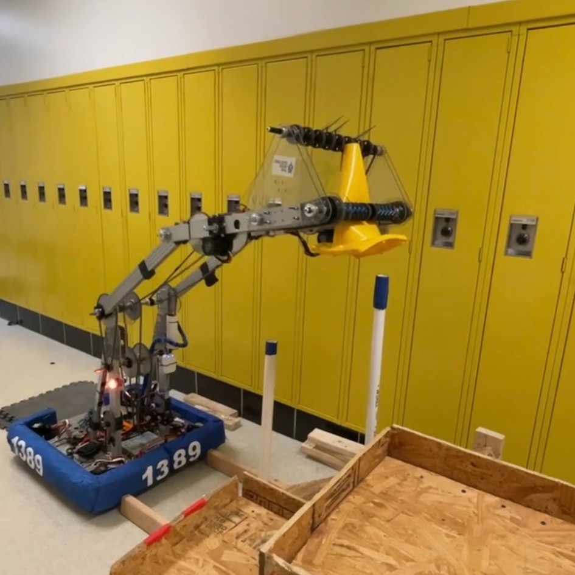
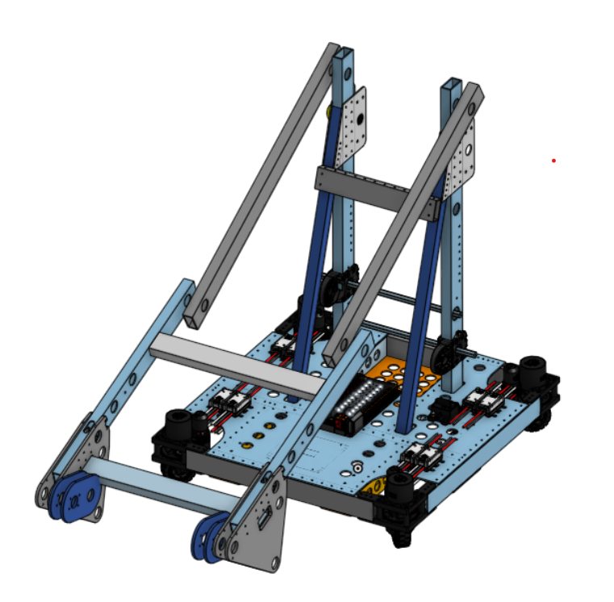
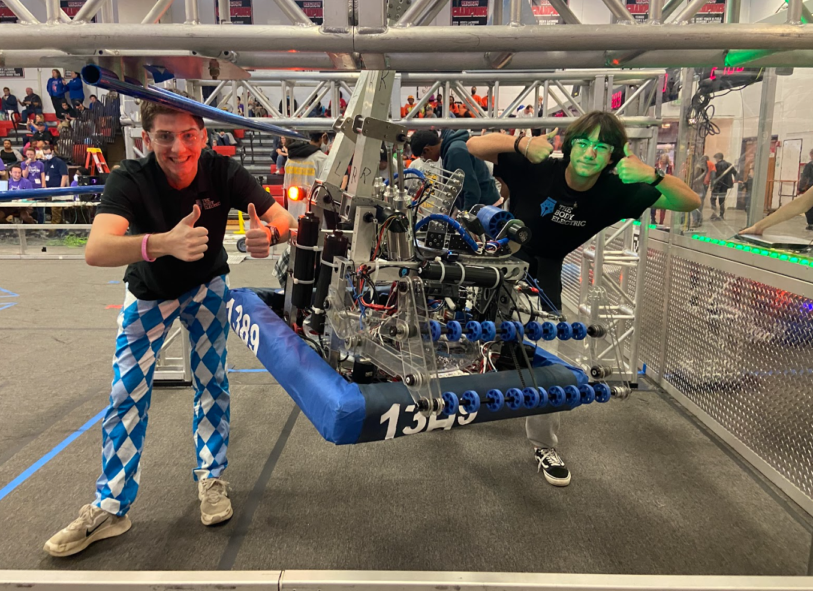
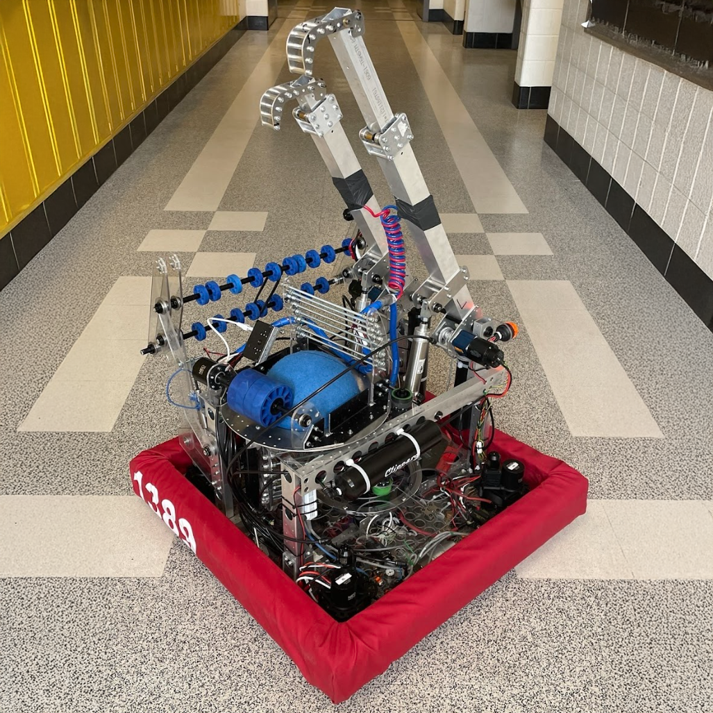
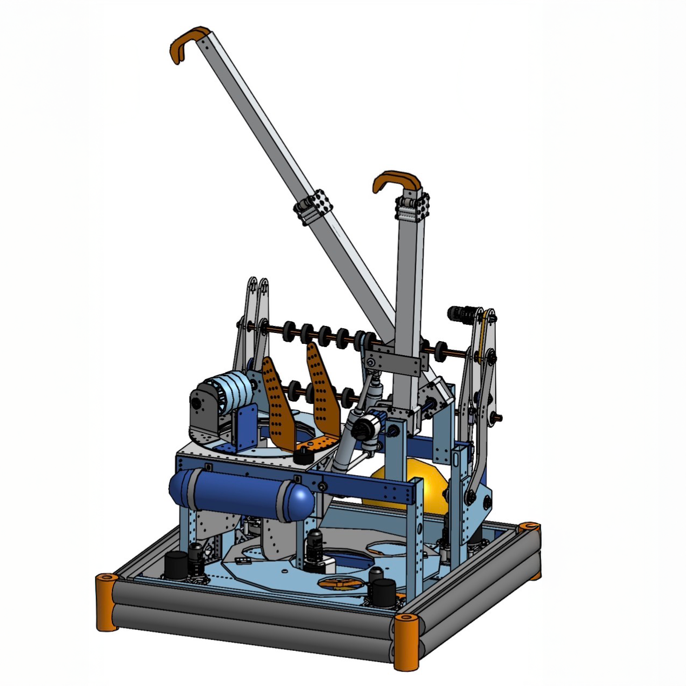
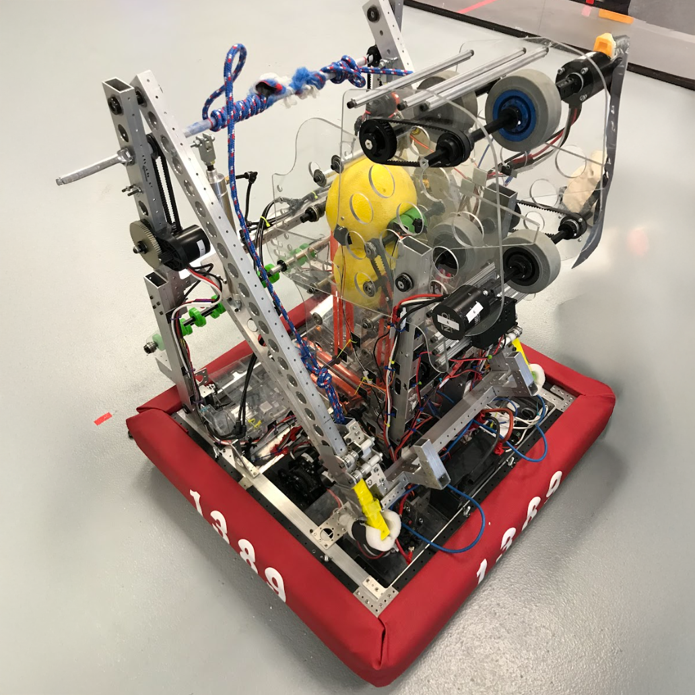
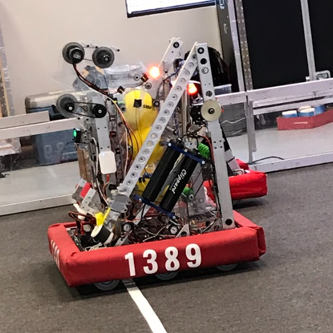
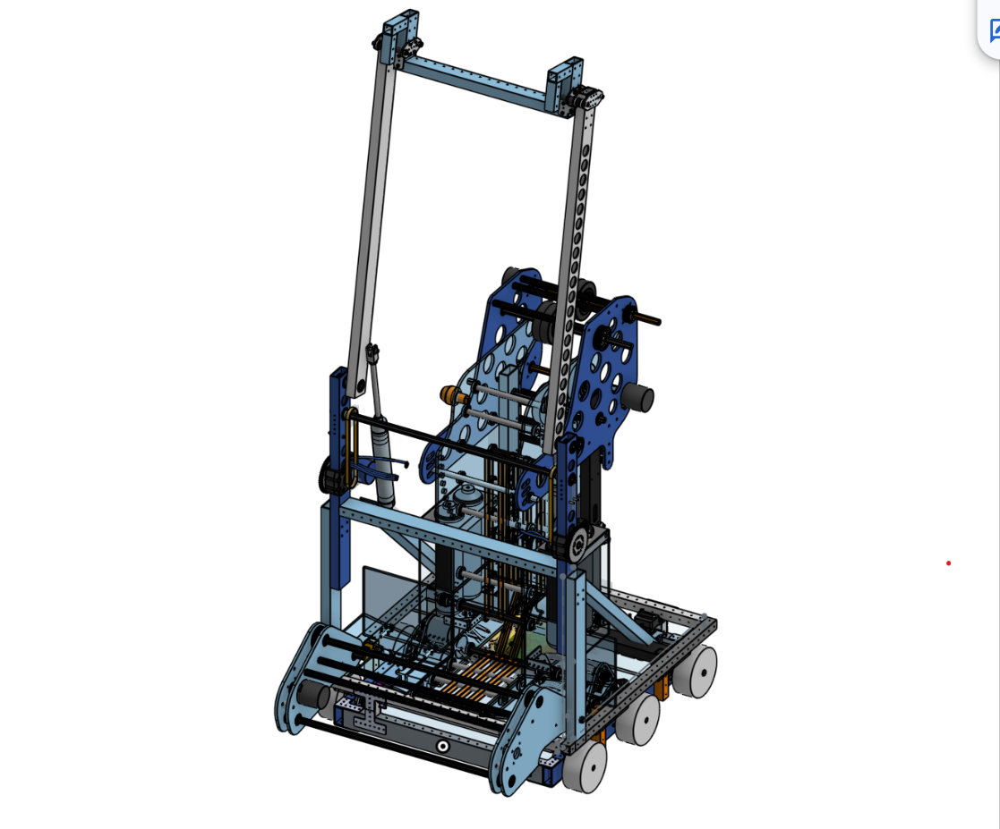

FRC Robotics — Team 1389

2023 — Team 1389 | "Corb"
In the FIRST Robotics Competition Charged Up season, Team 1389 built Corb — a robot designed to score cones and cubes at all three heights and balance on the charging station. The robot featured a 4-wheel swerve drivetrain, a double-jointed arm, and a dual-roller intake capable of handling both game pieces in autonomous and teleop.



Robot Design
- Drivetrain: 4-wheel swerve drive powered by 4 NEO and 4 NEO 550 motors — 360° movement and rotation for maximum field agility.
- Arm: Double-jointed arm with 270° of rotation driven by NEOs at the base via a chain-and-sprocket system. Scores at all three heights.
- Intake: Double-roller compliant wheel intake capable of picking up both cubes and cones from the ground and substations. A motorized "finger" roller allows cone rotation for backwards high-node scoring.
Programming
- Auto-Balancing: Gyroscope-based system that drives the robot forward or backward until level within 2.5° — works from any approach angle using odometry.
- Auto-Positioning: Preset arm positions using encoder feedback so drivers can score at any height with a single button press.
- Path Tracking: Field-aware autonomous paths optimized through testing, accounting for holonomic swerve movement to maximize auton scoring.
2022 — Team 1389 | "Stargazer"
In the FIRST Robotics Competition Rapid React season, Team 1389 built Stargazer — a robot centered around fast and accurate cargo shooting. The robot featured several mechanically sophisticated systems working together to intake, index, and shoot balls with minimal driver input.



Robot Design
- Drivetrain: Swerve drive for full 360° movement and precise field positioning.
- Intake: Over-the-bumper intake that folds out to collect cargo from the field floor and bring it inside the robot frame.
- Indexer: Lazy Susan-style rotating indexing system that queued and staged balls for consistent feeding into the shooter.
- Turret: Rotating turret allowing the shooter to aim independently of the drivetrain, enabling shooting on the move without needing to face the hub.
Programming
- Swerve Drive: Field-oriented swerve with NavX gyroscope, odometry for position tracking, and angle optimization per wheel for shortest-path rotation.
- Turret Tracking: Limelight vision integrated via NetworkTables with a PID controller to automatically align the turret to the hub in real time.
- Ball Detection: ML-based vision system detects power cells and uses a PID loop to turn the robot toward them autonomously during intake sequences.
- Shooter RPM Control: Closed-loop flywheel velocity control via PID, with target RPM configurable from SmartDashboard for shooting at varying distances.
- Automated Climbing: Sequential command groups execute a synchronized multi-stage climbing sequence, removing manual timing from the driver.
2020 — Team 1389 | "Andromeda"
In the FIRST Robotics Competition Infinite Recharge season, Team 1389 built Andromeda — a power cell shooting robot designed for reliability and versatility. The robot featured a tank drive, over-the-bumper intake, conveyor system, and a flywheel shooter with vision-assisted targeting.



Robot Design
- Drivetrain: Six-wheel tank drive with chain-in-tube, powered by 4 NEO motors with 5" Colson wheels for traction and reliability.
- Intake: Over-the-bumper compliant wheel intake driven by a 775 Pro motor at 15:1, designed for fast and consistent power cell pickup.
- Conveyor: Vertical belt conveyor with a bottom hopper, using Vex toothed aluminum-reinforced belts to feed power cells up to the shooter.
- Shooter: Vertical dual-flywheel shooter with manually adjustable angle. Inner wheels spin at half the speed of outer flywheels via a pulley system, driven by two NEOs. Limelight mounted beneath for vision targeting.
- Climber: Pneumatic piston arm that swings 120° to reach the shield generator bar, with NEO-powered winches and a ratchet to hold position after climbing.
Programming
- Power Cell Detection: Custom machine learning model running on a Raspberry Pi 3B+ with a Google Coral Edge TPU, identifying power cells and publishing horizontal position to NetworkTables for autonomous alignment.
- Autonomous Routines: Four routines including a reliable 6-ball auto — shoots 3 preloaded balls, drives to collect 3 more, realigns with Limelight, and shoots again.
- Vision Targeting: Limelight 2+ with PID control loop for automatic alignment to the power port in both auto and teleop. Distance from target used to calculate optimal shooter speed.